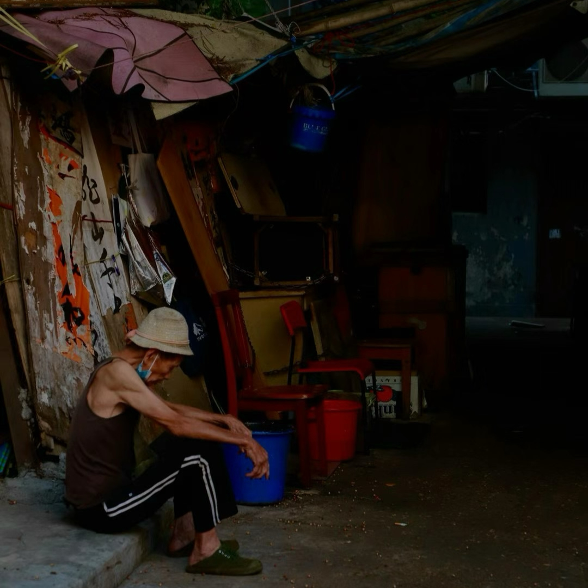
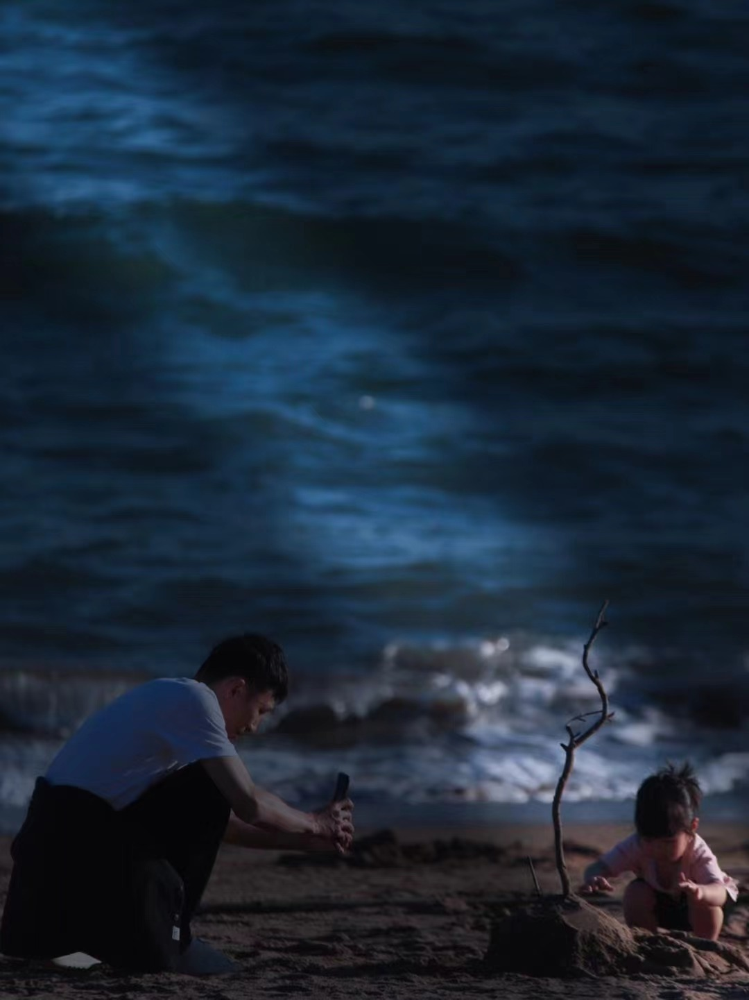
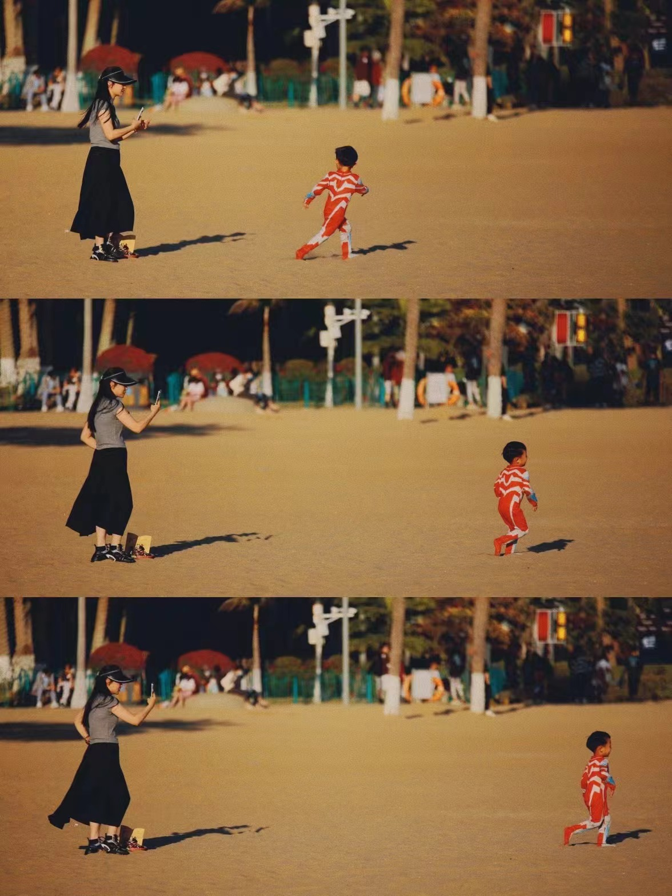

孤独
照片是拍摄于香港特别行政区元朗区的一处公园附近，隔壁是许多老人在打牌，聊天
唯独这位老人穿着朴素独坐在石阶旁低着头不知在思索着什么，代入其中感受到老人的孤独感
所以举起相机按下快门，记录下这特别的瞬间。
第二照片是拍摄于香港特别行政区深水埗附近海滨公园
炎炎夏日中，老人带着草帽在栏杆外挥钓鱼竿，在香港这个快节奏的生活城市，看着老人悠然的钓鱼，仿佛心灵得到了些许的净化
所以举起相机按下快门，记录下这特别的瞬间。
茁壮成长
照片是拍摄于中国福建省厦门市鼓浪屿
照片中的大人和小孩子都在愉快的玩耍，我们每一个人都有着这样的童年，但是回首往昔，我们也像小朋友一样和家长渐行渐远。
思绪万千，感慨万分，所以举起相机按下快门，记录下这特别的瞬间。



长大
该照片是拍摄于香港特别行政区湾仔电车上
和朋友一起在香港著名的“叮叮车”上，朋友正望向窗外思索着什么
疫情期间人人都必须带着口罩，人们的内心也被随之封闭